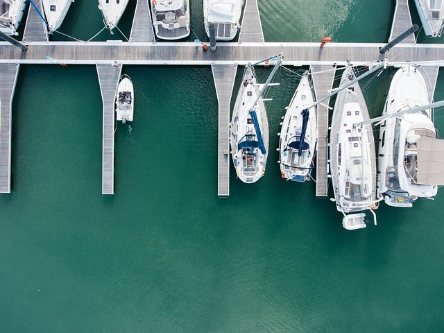
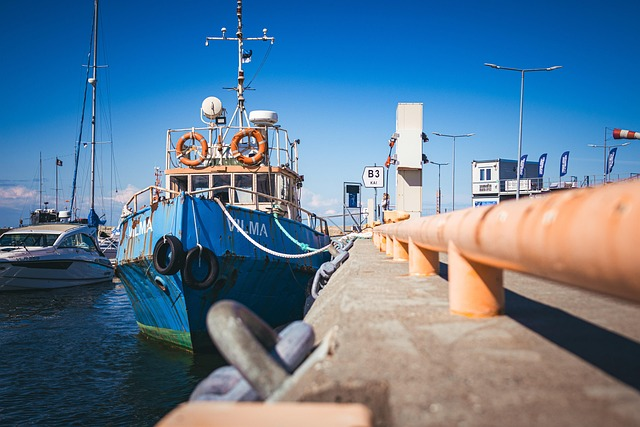
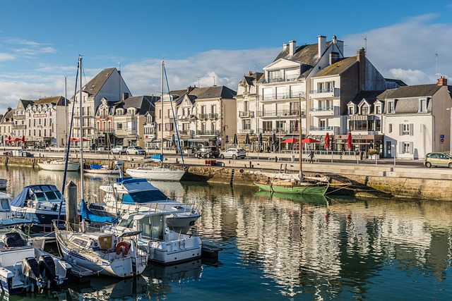

A Lively Harbor
The harbor is the island’s lifeline, a sun soaked crescent of docks where brightly painted boats sway gently in the tide. Because every attempt to reach the island by plane ends in strange electronic malfunctions—navigation screens flickering out, radios dissolving into static—the sea is the only reliable passage. Fortunately, the boats here run on a clean kelp based biofuel made from a species that grows abundantly along the island’s reefs, giving every arrival a sustainable start to their stay.

Enjoy Our Marketplace
Just beyond the docks, the harbor opens into a lively marketplace filled with the scent of grilled tropical dishes and the sound of artisans carving driftwood or weaving palm fiber baskets. Visitors wander between stalls sampling fresh fruit drinks, picking up hand dyed fabrics, or chatting with local fishermen who bring in their catch at dawn. The marketplace feels like the island’s heartbeat, a place where travelers and residents mingle under strings of lanterns that glow softly as evening settles in.

Catch Some Waves
A short walk from the harbor leads to a golden stretch of beach where surf instructors teach newcomers how to ride the island’s gentle breaks. The waves here are perfect for beginners—steady, warm, and welcoming—while more experienced surfers paddle farther out for taller swells. With the harbor bustling behind you and the open ocean ahead, the beach completes the island’s charm: a blend of mystery, community, and adventure that begins the moment you step off the boat.